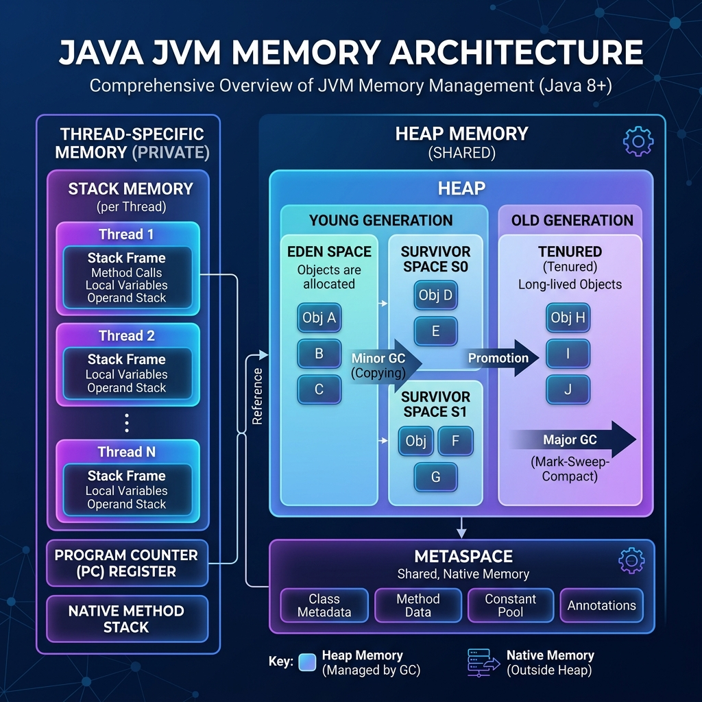

Summary
Java memory management focuses on how the Java Virtual Machine (JVM) allocates and manages memory during program execution. It involves dividing memory into Stack and Heap, managing the lifecycle of variables, and utilizing the Garbage Collector (GC) to reclaim memory automatically.

Figure 1: JVM Memory Architecture Overview
JVM Memory Division
Stack Memory
- Stores temporary variables, primitive data types, and method call frames (stack frames).
- Each thread has its own isolated stack memory.
- Stores references to Heap objects, not the objects themselves.
- Variables live within a scope; on exit, they are destroyed in LIFO (Last-In-First-Out) order.
- Exhaustion leads to
StackOverflowError.
Heap Memory
- Stores objects and string literals (in the String Pool).
- Shared across all threads.
- Larger than stack memory and divided into Young and Old generations.
String Pool (Intern Pool)
- A special memory region within the Heap (since Java 7) that stores string literals.
- Memory Optimization: Ensures that only one copy of each unique string literal is stored, saving significant memory.
- Mechanism: When a string literal is created (e.g.,
String s = "Java";), the JVM checks the pool. If it exists, the reference to the pooled instance is returned; otherwise, a new instance is added. - Manual Interning: The
intern()method can be used to manually place strings into the pool.
MetaSpace (Non-Heap)
- Stores class metadata, constants, and static variables.
- Located outside the Heap and is expandable, replacing the old PermGen.
Memory Characteristics
| Memory Type | Stores | Characteristics |
|---|---|---|
| Stack | Primitive variables, references, method frames | Per thread, temporary, scope-bound, LIFO cleanup |
| Heap | Objects, string literals, class metadata (MetaSpace) | Shared, larger, divided into Young/Old Gen |
| MetaSpace | Class metadata, constants, static variables | Separate from Heap, expandable |
Lifecycle and Scope
- Variables exist only within their scope; once the scope ends, variables and references in the stack are deleted.
- When a method finishes, its stack frame is removed.
- References pointing to Heap objects are deleted as scopes end, but actual objects remain in the Heap until garbage collected.
Garbage Collection (GC)
Reclaims memory by deleting Heap objects that are no longer referenced. JVM manages when GC runs; System.gc() is only a request, not a guarantee.
Reference Types
| Reference Type | Description | Impact on GC |
|---|---|---|
| Strong Reference | Default type (Person p = new Person();) |
Object is NOT collected as long as strong ref exists |
| Weak Reference | Created via WeakReference class |
GC collects immediately if no strong refs exist |
| Soft Reference | Created via SoftReference class |
Collected only when memory is low (urgent need) |
| Phantom Reference | Created via PhantomReference class |
Used for scheduling post-mortem cleanup actions |
Heap Generations
Young Generation
- Eden Space: Where new objects are created.
- Survivor Spaces (S0, S1): Store objects that survive minor GC cycles.
Old Generation (Tenured)
- Stores long-lived objects promoted from the Young Generation.
- GC runs less frequently (Major GC) but takes more time.
Garbage Collection Algorithms
| GC Type | Description | Characteristics |
|---|---|---|
| Mark and Sweep | Marks unreferenced objects and removes them | Basic algorithm for many implementations |
| Mark and Sweep with Compaction | Compacts remaining objects after sweeping | Avoids memory fragmentation |
| Serial GC | Single-threaded cleanup | Simple but causes long pause times |
| Parallel GC | Multiple threads run in parallel | Default in Java 8; reduces pause time |
| CMS (Concurrent Mark Sweep) | Runs concurrently with application threads | Minimizes pauses; no compaction |
| G1 GC (Garbage First) | Compacts memory and runs concurrently | Modern default; balances latency and throughput |
Stop-the-world pause: All application threads pause during GC, impacting performance.
Young Generation GC Process
| Step | Action | Result |
|---|---|---|
| 1. Creation | New objects created in Eden | Eden fills with objects |
| 2. Minor GC | Mark and Sweep in Young Gen | Unreferenced objects marked for deletion |
| 3. Sweep | Surviving objects moved to S0/S1 | Age incremented for survivors |
| 4. Next GC | New objects in Eden; Sweep again | Survivors moved alternately between S0 and S1; age +1 |
| 5. Promotion | Objects reach age threshold (e.g., 3) | Objects promoted to Old Generation |
Key Takeaways
- Stack is fast, temporary, and per-thread. Heap is shared and stores all objects.
- Garbage Collector automates cleanup, freeing developers from manual management.
- Heap is split into Young and Old generations for efficient GC.
- Modern algorithms like G1 minimize pause times and improve throughput.
- MetaSpace provides expandable space for class metadata, preventing old OOM issues.